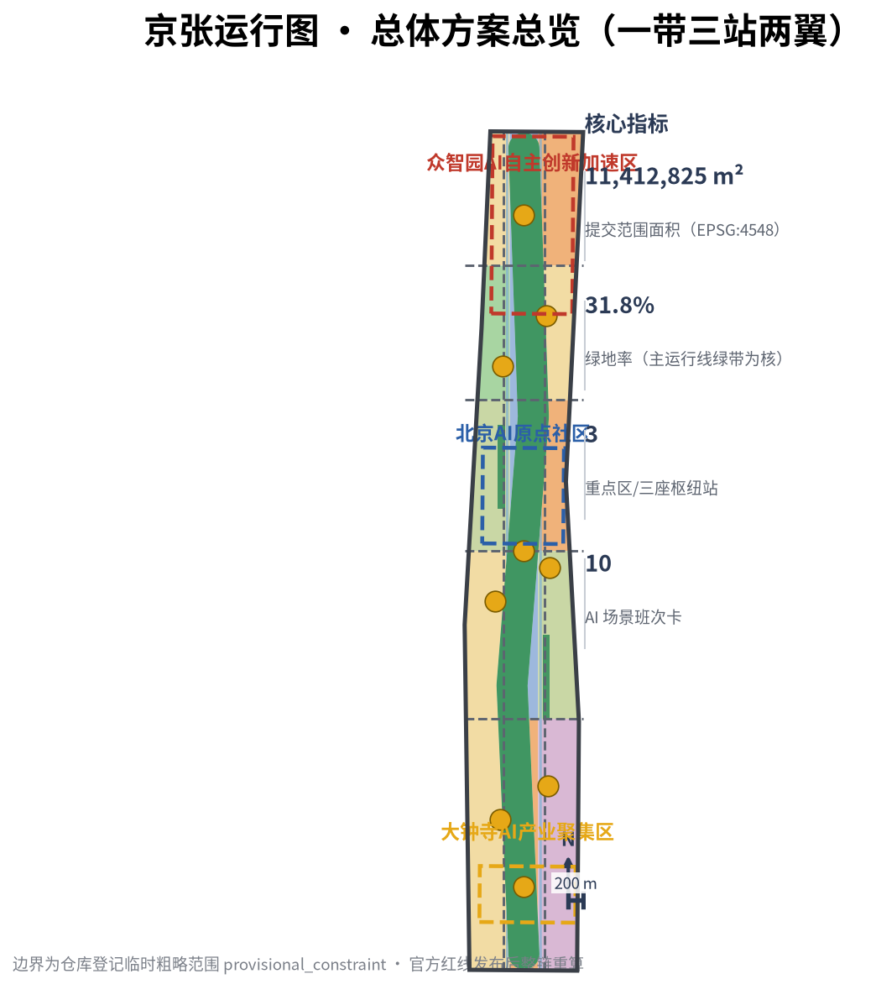
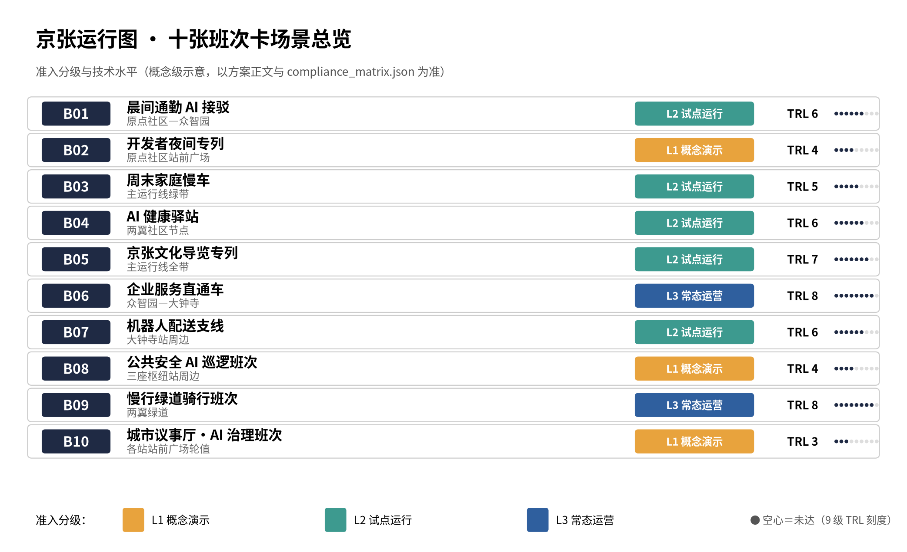

一带 · 主运行线绿带
约 360 米宽概念绿廊：公园绿地 + 站台慢行道 + 公共空间节点，南北贯通三座枢纽站。
离线电子展示成果。权威数据仍以 GeoJSON、metrics.json、矩阵和自检结果为准；本页把总览地图、一带三站两翼空间结构、三处重点区域（三座枢纽站）、十张班次卡（AI 场景）、核心指标、任务覆盖、来源与假设转成人类可读的视觉说明。
总览地图将主运行线绿带、三座枢纽站、两翼支线、站台慢行道与公共空间节点放在同一张证据图中，并叠加蓝绿公共空间底图（来自 geometry/*.geojson 与 metrics.json）。

一条主运行线（遗址公园活力带）贯通南北，三座枢纽站对应三处重点区，两翼支线输送资本、IP、场景与生活要素；用地分区按运行图横切片语法划分并无缝覆盖提交边界。
约 360 米宽概念绿廊：公园绿地 + 站台慢行道 + 公共空间节点，南北贯通三座枢纽站。
引擎站（众智园）承载全栈自主创新；始发站（原点社区）承载创业生态；枢纽站（大钟寺）承载智能原生业态。
东翼·中关村科技服务翼（要素全球化配置）；西翼·小月河场景赋能翼（AI 场景与活力城市）。
统筹研究范围（43.6 km² 全局路网）→ 总体设计范围（11.4 km² 主体线路，本包提交边界）→ 重点区域范围（368.4 ha 三座枢纽站站场）；更新项目按近/中/远三期排布。
全局路网：AI 产业链、人才流、算力与数据流动、未来城市形态研究。
主体线路：主运行线绿带、三座枢纽站、两翼支线的用地分区与空间结构（控规深度）。
站场设计：三处重点区功能业态、建筑规模、拆改留分类、公共空间与交通组织。
三座枢纽站站前广场与慢行道贯通、原点社区创业者街区、大钟寺智能原生业态试点。
两翼支线激活：企业服务直通车节点、小月河社区公园与健康驿站、众智园测试场一期。
外围更新片提质、全带风貌提升与年度运行图常态化运营。
每处重点区按「定位 + 空间结构 + 建筑更新 + 交通慢行 + 公共空间 + AI 场景 + 实施风险」组织详细设计。
AI 全栈自主创新体系策源地；全栈创新环：基础研究—工程化—测试验证—加速器；端侧算力与数据沙盒测试场 T3；引擎塔概念地标。
AI 人才与创业者第一站；小街区密路网创业者街区；0 公里里程碑概念地标；晨间通勤接驳 B01 与开发者夜间专列 B02。
智能原生新业态换乘节点；AI 消费街 + 商务楼宇群 + 展示馆；信号灯广场概念地标；机器人配送支线 B07。
每个场景=一个班次：有明确线路（空间位置）、时刻（运营节奏）、调度员（运营主体）与乘员（服务对象）。
原点社区—众智园；通勤开发者；ai-traffic-walkability
原点社区站前广场；开发者与学生；enterprise-service-copilot
主运行线绿带；居民与家庭；ai-traffic-walkability
两翼社区节点；居民与老人；ai-health-service-navigation
主运行线全带；游客与市民；ai-cultural-guide
众智园—大钟寺；中小企业与创业者；enterprise-service-copilot
大钟寺站周边；商户与消费者；robot-delivery-low-speed
三座枢纽站周边；公众；public-safety-operations-review
两翼绿道；骑行者与通勤者；ai-traffic-walkability
各站前广场轮值；市民/开发者/管理者；治理类
三处重点区各 3 处节点级设计（共 9 处，概念级，confidence=low），可由专业团队直接深化为单体方案；场景卡准入分级总览（L1/L2/L3 × TRL）与 Logo VI 矢量主版随包提供。
N-Z01 引擎塔·全栈创新环心；N-Z02 数据沙盒测试场（T3）；N-Z03 五环生态绿楔口。
N-O01 0 公里里程碑广场（B02/B10）；N-O02 创业者客厅街（B06）；N-O03 首班车接驳站（B01）。
N-D01 信号灯广场（B10）；N-D02 智能原生消费街（B07）；N-D03 枢纽综合体·AI 展示馆（B06/B08）。

compliance_matrix.json 覆盖公告 1.3/1.4/1.5 与 agent.1—agent.6；standard_matrix.json 覆盖五项强制性标准；design_depth_matrix.json 十八项深度全部 complete。
来源见 sources.json（10 条：7 条 formal-ready、2 条 provisional_only、1 条导航层）与 standards/references 快照；待补控规、红线、权属与工程条件登记于 assumptions.json（9 条，含复算触发条件）。本页不加载任何 CDN、远程瓦片、外部脚本、外部字体或 iframe。
deterministic validation、bilingual packaging、spatial review、visual packaging check 与 professional evidence review 须全部通过（self_check.json）。